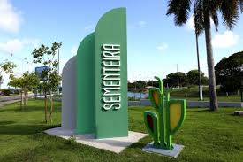

Sementeira

O parque pode ser utilizado pelo aracajuanos e turistas para prática de atividades esportiva e de lazer,pesquisas ambientaisalém de outras atividades em contato com a natureza. O espaço conta com parque infantil,campo de futebol,quadra poliesportiva,espaço com aparelhos para exercícios físicos,pista para caminhada,quiosques para piqueniques,sanitários, lagos,e iluminação
Atrativos do Parque da Sementeira
- Parque infantil
- Campo de futebol
- Quadra poliesortivas
- Aparelhos para exercícios fisícos
- Pista para caminhada
- Quiosque para piqueniques
- sanitários
- Lagos e áreas verdes
- iluminação adequada para visitas noturna